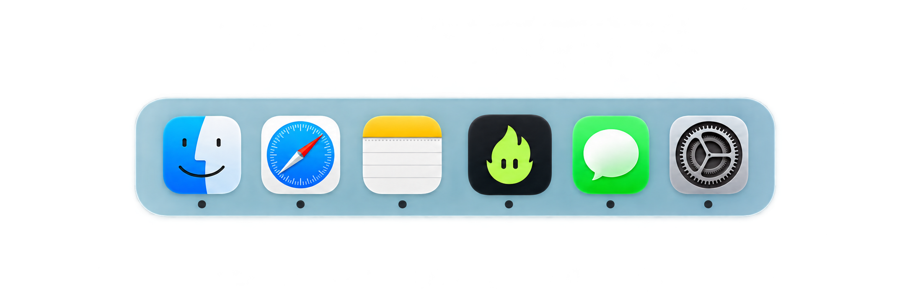

In this case study
Case study · Fire Tasks
What if my to-do list
could do a bit more?
My tasks were spread across messages, meeting notes and a separate to-do list. Keeping track meant going back through conversations, copying actions over and checking what I’d already done. Even with a list, small but necessary jobs could sit there for weeks. I wanted to focus on the call, trust that I could collect the actions afterwards, and get a little help starting the work I kept putting off.
Fire Tasks grew from a skill that collected my actions into a Mac app that could run it for me. Behind a simple list, the system has to find commitments, keep the evidence, handle uncertain results and bring in new tasks without undoing my changes. Adding an agent raised another question: what could it usefully prepare, and when should it come back to me? Finding a task, drafting the work and calling it done are different decisions.
I designed and built the app through prompting, using working prototypes, system maps and motion studies to test and refine it. My aim was to make that thinking feel simple in use: one place for collected and manual tasks, clear offers of help, and work I can review before using. I use it myself, and it’s now being tested with the team at ClearScore. I’m also exploring when it should start preparing suitable tasks without waiting for a click.
Fire Tasks
/faɪə tɑːsks/
Collect the tasks.
Fire off the ones AI can help with.
“Fire that over to me.” We already use it when we hand work to someone else. Fire Tasks plays on that idea. What if my tasks were collected in one place, and I could fire the ones AI could handle off to an agent?
The flame gives that idea a face. It invites me to hand something over, turns orange while the agent works, then shows a tick when the draft is ready for me. The agent prepares the work. I review it and decide when the task is done.
Tasks
Find tasksReady to help
AI prepares. I decide.
Problem, design, motion
and AI-assisted build.
A native Mac app
Now in team testing.
Test when AI should
start work on its own.
01 / Where it started
Tasks everywhere.
Still mine to collect.
I had a Microsoft To Do list, but it only held the tasks I remembered to put there. The rest were in Slack threads, Notion pages, Zoom calls and my own notes. I kept switching between apps, finding the context again, then copying the action into my list. A quick check could turn into a round of catching up. I wanted one place to see what needed me, without having to piece it together each time.
# project-chat
Could you bring a few questions to the review?
One reply · A new actionReview notes
Next steps
□ Share the draft agenda
□ Gather feedback
“I’ll write up the next steps.”
A commitment made on a callAfter the call
Write up the notes.
Follow up on the open question.
- Prepare questions for a design review
- Write up the notes from a call
- Share a draft agenda
- Review the latest designs
- Collect feedback on the prototype
- Summarise the next steps
- Follow up on an open question
The first attempt / A collection skill
The actions were collected.
The list still wasn’t.
The skill found my actions across messages and calls. I could read what I needed to do in ChatGPT, but I still had to add those actions to Microsoft To Do myself. AI had done the searching. I was still doing the copying.
That was where Fire Tasks began. I wanted the collected actions to become my task list, with space for the tasks I added myself. One place to see the work, instead of another answer I had to move somewhere else.
I checked messages and meeting notes and found two confirmed actions and one likely action. Completion is uncertain where noted.
Top actions
| Action | Evidence / context | Due | Confidence |
|---|---|---|---|
| Prepare questions for the design review | Meeting notes name me as the person preparing the questions. | No date given | Confirmed |
| Share the draft agenda | I agreed to share an agenda in the conversation. No completion was found. | Before the next call | Confirmed |
| Summarise the feedback | A summary was requested in the notes. My contribution is implied. | No date given | Likely |
02 / Bringing search into the app
One search.
Stay in the app.
The skill saved me from going through Notion, Zoom and Slack myself. But I still had two places to check: the response in ChatGPT and my task list. I had to run the skill, read what came back, then switch to Fire Tasks and refresh it.
I researched Codex runners as a way to connect the app and AI. A runner could start the skill from Fire Tasks and bring the results back into the list. That meant I could search without leaving the app, with progress showing what was happening in the background.
I also wanted to schedule searches each morning, so I could start the day with an up-to-date list rather than remember to collect it. Bringing the search into the app was the step towards that.
Make the search feel connected.
I tried a popover, a side panel and an inline strip. The strip showed which sources were being checked without covering the list. I could see the steps AI was taking and keep working while it searched.
03 / Firing tasks off to agents
Which tasks can
I fire off?
I wanted the app to recognise what the agent could help with, and what still needed me. I think of it in three routes: a useful draft, a task that needs more context or tools, and a task I should complete myself.

A clear job.
A small invitation.
The label tells me what the agent can prepare. The flame brings it to life.
The app offers help where it fits. I choose when to fire the task off.
04 / Reviewing the agent’s work
Fire it off.
Come back to the work.
When an agent finished its part, I didn’t want it to tick the task off my list. I could miss what had been done, and a finished draft didn’t mean I was happy with the result. I kept the task open and gave the output its own review screen. I can see what the agent has prepared, read or edit it, then manually check off the task when I’m happy with the work.
Tasks
Find tasksPrepare questions for the design review
Get feedback on the agent handoff flow.
Read the draft below. Copy the questions to use in your review.
I’ve drafted questions about clarity, control and the next step.
1. Is it clear what the agent has prepared?
2. Does the next step make sense?
3. Can I tell what still needs my decision?
Copies the content. The original task stays open.
05 / Brand, motion & system
A little fire.
A clear purpose.
A dark home for tasks. Bright green for action. A character whose movement shows what’s happening: available, working, done.
Tasks.
Agent available
Working
Done
Make the rules
easy to follow.
A designer can fill gaps from experience. I found I had to make those choices explicit for AI. I defined the type, colours and components, then wrote guidelines for how to use them. Reuse what’s there. Keep the hierarchy clear. Ask before adding a new style. A small system gave each prompt a shared starting point and helped keep the app on track.
Typography
Colour
Shape
Two corner sizes.
One consistent feel.
The rules become
the interface.
The same styles carry from the task to its sources and the next action.
Tasks
Bring the questions and a short agenda.
06 / Learning to build through chat
From designing screens
to shipping an app.
I used ChatGPT to create the whole app. That meant learning to design through conversation and working code, instead of starting with screens in Figma.
At first, it was tempting to keep asking for the next feature. I soon learned that planning mattered just as much as prompting. Defining the design system, the task structure and the way the parts connected gave each change a clearer starting point. The system maps weren’t just for explaining the work afterwards. They helped me work out what to build and gave AI something concrete to follow.
The biggest change was how quickly I could react to the real app. I could try a search, notice that progress felt disconnected, and change the interface in code. I could watch the character move and adjust its timing. Rather than imagining how a screen might behave, I was making decisions while using it. That made small details easier to spot and gave me a much shorter loop between an idea and something I could test.
I also learned to ship the work to GitHub. I added Fire Tasks to our internal GitHub repository, and it’s now being tested with the team at ClearScore as a way to stay on top of tasks. Building the interface was only part of it. I had to learn how to save changes, keep track of versions and get the app into other people’s hands. Chat helped me cross that gap, but I still had to check the result and decide what needed changing.
Fire Tasks now brings collected actions and the tasks I add myself into one list. My next question is when it should prepare suitable work without waiting for me to click. The same principle still applies: give the agent a clear job, make its progress visible, and bring the work back to me.